Lesson 24: Lab 13 — Configuring and Interacting with Alarms
Source: AVEVA Application Server 2023 Training Manual, Module 7 Lab 13
Hands-on lab covering limit alarm configuration, state alarm setup, runtime alarm interaction via Object Viewer, alarm history in Historian Client Web, and SQL-based alarm data queries. (pages 7-23 to 7-35)
24.1 Overview — What This Lab Covers
Reference: Lab 13 (pages 7-23)
In this lab, you will configure alarms on your existing mixer objects, interact with alarm attributes in the Object Viewer, view alarm history in AVEVA Historian Client Web, and query alarm data directly from the SQL Server database.
Lab Objectives:
Configure limit alarms on the mixer level attribute (high and low thresholds)
Create a state alarm on a new Boolean attribute for PLC-triggered conditions
Deploy alarm configuration changes to the production galaxy
Interact with alarm attributes in Object Viewer (view, acknowledge)
View alarm and process history in AVEVA Historian Client Web
Retrieve alarm history using SQL Server Management Studio queries
Prerequisites: You should have completed Labs 9–12 with the production platform deployed, objects running under AppEngine1 → ControlSystem → Line1/Mixer100, and Historian Client Web accessible.
24.2 Configuring Limit Alarms on $Mixer.Level
Reference: Lab 13 (pages 7-24)
First, you will configure high and low limit alarms on the Level attribute of the $Mixer template. These alarms will trigger whenever the mixer level crosses defined thresholds.
Step 1. In the IDE, Template tab, navigate to Training\Project toolset, and open the $Mixer.Level configuration editor.
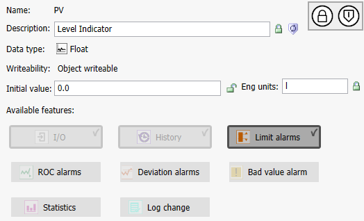
$Mixer.Level configuration editor showing the PV attribute properties (Name: PV, Description: Level Indicator, Data type: Float, Eng units: l) and the Available Features section. The Limit alarms button is enabled and highlighted — click it to configure alarm thresholds (page 7-24)
Step 2. Click the Limit alarms button to open the alarm configuration panel.
Step 3. Scroll down and configure the Limit alarms group as follows:
Setting
Value
Notes
HiHi
Unchecked
Not used in this lab
Hi
Checked (locked)
Enable high-level alarm
Hi: Limit
80.0 (unlocked)
Alarm triggers when level exceeds 80.0
Hi: Priority
100 (locked)
Severity 1 — highest priority
Hi: Alarm message
"Mixer Hi Level Alarm" (locked)
Message displayed to operator
Lo
Checked (locked)
Enable low-level alarm
Lo: Limit
25.0 (unlocked)
Alarm triggers when level drops below 25.0
Lo: Priority
500 (locked)
Severity 2 — medium priority
Lo: Alarm message
"Mixer Lo Level Alarm" (locked)
Message displayed to operator
Alarm deadband
0.0 (locked)
No deadband — alarm clears exactly at limit
Time deadband
00:00:00.000000 (locked)
No time-based filtering
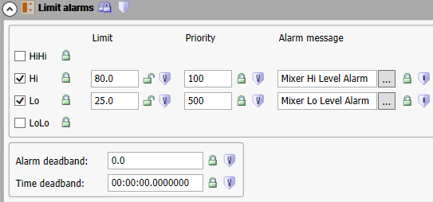
Limit Alarms configuration panel for $Mixer.Level. The Hi alarm is checked with Limit=80.0, Priority=100, and message "Mixer Hi Level Alarm". The Lo alarm is checked with Limit=25.0, Priority=500, and message "Mixer Lo Level Alarm". Lock icons indicate template inheritance — locked values are fixed from the template, unlocked values can be customized per instance (page 7-24)
Understanding Lock Icons: In AVEVA Application Server, the lock icon controls template inheritance. A locked attribute value is inherited from the template and cannot be changed in descendant objects. An unlocked value can be overridden in derived objects. This lets you enforce standards (like alarm messages) while allowing flexibility (like alarm limits) per instance.
Step 4. Save and close, then check in the object with an appropriate comment.
24.3 Creating a State Alarm on $Mixer.Alarm.Condition
Reference: Lab 13 (page 7-25)
Next, you will add a new Boolean attribute to $Mixer that monitors an alarm condition triggered from the PLC. This uses a State alarm — an alarm that activates based on a Boolean state rather than a numeric threshold.
Step 5. In the Training\Project toolset, open the $Mixer configuration editor.
Step 6. Add an attribute named Alarm.Condition, and configure it as follows:
Property
Value
Notes
Description
"Mixer Malfunction" (locked)
Human-readable label for the alarm
Data type
Boolean
True/False binary state
Writeability
Object writeable
Can be written to by external systems
I/O
Checked
Connected to a physical I/O source
I/O: Read
Selected
Read-only input from PLC
I/O: Read from
<IODevice>.$Mixer.Alarm.Condition
PLC source address
State alarm
Checked (locked)
Enable state-based alarm
Category
Process (locked)
Process alarm category
Priority
700 (locked)
Severity 3 — lower priority than Hi/Lo
Alarm message
me.Alarm.Condition.Description (locked)
Uses the Description property ("Mixer Malfunction")
Active alarm state
True (locked)
Alarm activates when attribute = True
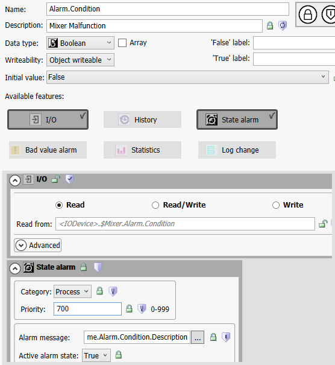
$Mixer.Alarm.Condition attribute configuration. The attribute is a Boolean with I/O Read enabled (reading from <$Device>._$Mixer.Alarm.Condition) and a State alarm configured with Category=Process, Priority=700, and the Active alarm state set to True. The alarm message references me.Alarm.Condition.Description which resolves to "Mixer Malfunction" (page 7-25)
Limit Alarms vs. State Alarms: A Limit alarm triggers when a numeric value crosses a threshold (e.g., level > 80.0). A State alarm triggers when a Boolean attribute enters a specific state (True or False). State alarms are ideal for monitoring PLC-triggered conditions like equipment faults, interlock trips, or mode changes — any binary condition that doesn't depend on a numeric threshold.
Step 7. Save and close, then check in the object with an appropriate comment.
Tip: You may configure other data points for alarming at this stage. Any attribute with I/O, History, or alarm features enabled can generate alarm events when conditions are met.
24.4 Deploying Alarm Configuration Changes
Reference: Lab 13 (page 7-26)
After configuring alarms on the templates, you need to deploy the changes to the production platform for them to take effect at runtime.
Step 8. Switch to the Deployment view in the IDE. Notice that objects with pending changes display a yellow exclamation mark icon.
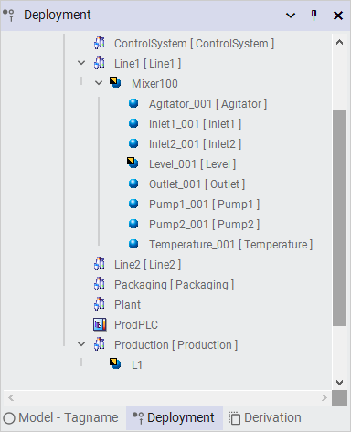
Deployment view showing the object hierarchy under ControlSystem. Mixer100, Level_001, and L1 display yellow exclamation mark icons indicating undeployed changes — the alarm configurations you just added. Other child objects (Agitator_001, Inlet1_001, Inlet2_001, Outlet_001, Pump1_001, Pump2_001, Temperature_001) show normal blue icons (page 7-26)
Step 9. Deploy Mixer100, Level_001, and L1 to push the alarm configuration to the runtime platform.
Deployment is required: Changes made in the IDE are only definitions — they do not affect runtime until deployed. If you configure alarms but forget to deploy, the alarms will not trigger. Always check the Deployment view for yellow exclamation marks after making changes.
24.5 Viewing Alarm States in Runtime (Object Viewer)
Reference: Lab 13 (pages 7-27)
Now you will use the Object Viewer to observe alarm conditions in real time, viewing the state of both the State alarm (Alarm.Condition) and the Limit alarms (Hi/Lo on Level_001.PV).
Step 10. View Mixer100 in Object Viewer.
Step 11. Add a new watch window and rename it "Alarms".
Step 12. Add the following attributes to the watch window:
Attribute
Purpose
Mixer100.Alarm.Condition
PLC-triggered malfunction state
Mixer100.Alarm.Condition.InAlarm
Whether the State alarm is active
Mixer100.Alarm.Condition.AckMsg
Acknowledgment message
Mixer100.Alarm.Condition.TimeAlarmOff
Time the alarm last cleared
Mixer100.Alarm.Condition.TimeAlarmOn
Time the alarm last triggered
Level_001.PV
Current level value
Level_001.PV.Hi.InAlarm
High-level alarm state
Level_001.PV.Lo.InAlarm
Low-level alarm state
Level_001.PV.Hi.Limit
High-level threshold (80.0)
Level_001.PV.Lo.Limit
Low-level threshold (25.0)
Level_001.PV.Hi.AckMsg
High alarm acknowledgment message
Level_001.PV.Lo.AckMsg
Low alarm acknowledgment message
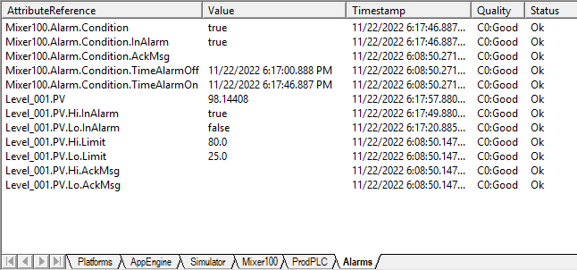
Object Viewer Alarms watch window showing real-time alarm states. Key observations: Level_001.PV = 98.14408 (above the Hi limit of 80.0), so Level_001.PV.Hi.InAlarm = true. Meanwhile, Level_001.PV.Lo.InAlarm = false because the value is well above 25.0. The Mixer100.Alarm.Condition is also active (true). All attributes show Quality = CO:Good and Status = Ok (page 7-27)
Reading Alarm States: The InAlarm attribute is the key indicator — when it equals true, the alarm condition is currently active. For limit alarms, Hi.InAlarm = true when the PV exceeds the Hi limit, and Lo.InAlarm = true when the PV drops below the Lo limit. The AckMsg attribute stores the operator's acknowledgment message — it is empty/null until an operator acknowledges the alarm.
24.6 Alarm Counts by Severity
Reference: Lab 13 (pages 7-28)
The AVEVA Application Server maintains an array attribute called AlarmCntsBySeverity on each area and object. This provides a summary of alarm counts categorized by severity level.
Step 13. For the Production area, add AlarmCntsBySeverity to the watch window.
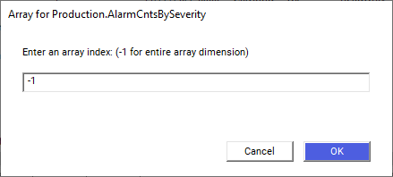
The "Array for Production.AlarmCntsBySeverity" dialog box. Enter -1 in the array index field to retrieve the entire array dimension — this displays all 13 alarm count elements rather than a single index (page 7-28)
Step 14. In the "Enter an array index" field, enter -1 (this retrieves the entire array). Click OK.
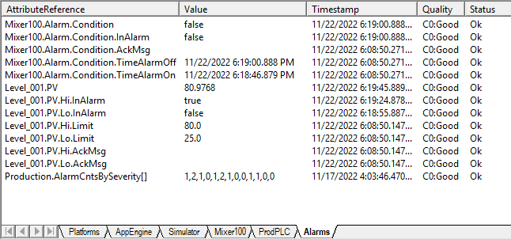
Updated Alarms watch window showing Production.AlarmCntsBySeverity[] with its array values. The alarm counts array contains 13 elements tracking active alarms, unacknowledged alarms, and return-to-normal states per severity level (page 7-28)
AlarmCntsBySeverity Array (13 elements):
Elements
Meaning
1–4
Active Alarms Per Severity (Severity 1 through 4)
5–8
UNACK_ALM Per Severity — unacknowledged active alarms
9–12
UNACK_RTN Per Severity — unacknowledged return-to-normal
13
Bitmask — which alarm severity/status applies to the local object
Step 15. Repeat steps 13–14 for the Line1 and Line2 areas, and for the Mixer100 object.
Note: Some alarm counts, such as Line2.AlarmCntsBySeverity, may be all zeros if no instances have been assigned to that area yet.
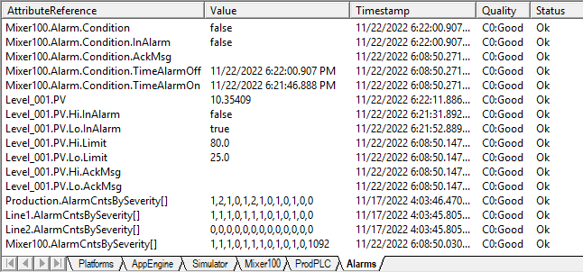
Alarms watch window expanded with AlarmCntsBySeverity[] arrays for Production, Line1, Line2 (all zeros — no instances assigned), and Mixer100. Mixer100 shows active alarm counts across severity levels (page 7-29)
24.7 Acknowledging an Alarm in Runtime
Reference: Lab 13 (page 7-29)
Operators must acknowledge alarms to confirm they have seen and are addressing the condition. In this step, you will acknowledge the high-level alarm on Level_001.
Step 16. In the Alarms watch window, double-click Level_001.PV.Hi.AckMsg.
Step 17. In the Modify String Value dialog box, type a comment to acknowledge the alarm (e.g., "Acknowledge alarm").
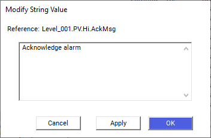
The "Modify String Value" dialog for Level_001.PV.Hi.AckMsg. Type an acknowledgment message such as "Acknowledge alarm" in the text field, then click OK to confirm. This action acknowledges the high-level alarm and reduces the severity count for the object (page 7-29)
Step 18. Click OK to confirm the acknowledgment.
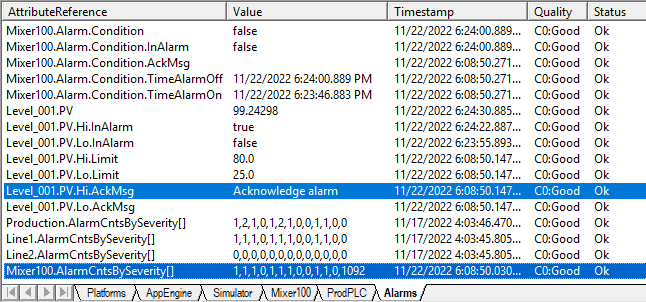
Alarms watch window after acknowledging the high-level alarm. The severity counts have been updated — the acknowledged alarm no longer contributes to the unacknowledged alarm count. The Level_001.PV.Hi.AckMsg now displays the acknowledgment text "Acknowledge alarm" (page 7-30)
Acknowledgment Rules:
When an alarm is acknowledged, the severity count for that object decreases.
The acknowledgment message must change if you wish to acknowledge the alarm again — writing the same string again will not re-acknowledge.
Acknowledgment is tracked via the AckMsg attribute — operators write a message to signal they have seen and are handling the alarm condition.
24.8 Viewing Alarm History in Historian Client Web
Reference: Lab 13 (pages 7-30 to 7-31)
AVEVA Historian Client Web provides a graphical view of alarm and process history. Alarm history is only visible for attributes that are historized — if an attribute is alarmed but not historized, its alarm history will not appear in the Client Web.
Important:Mixer.Alarm.Condition has no historized process data, so it cannot be added to a trend to view alarm states. Only historized attributes like Level_001.PV will show alarm colors on trends.
Step 19. Save the watch list and minimize Object Viewer.
Step 20. Switch back to AVEVA Historian Client Web in your browser and verify that Level_001.PV is on the trend.
AVEVA Historian Client Web showing the initial "Mixed data" trend of Level_001.PV. The sawtooth pattern represents the level cycling between 0 and ~100 over a 1-hour window. At this zoom level, the trend line shows the sawtooth pattern with red and yellow alarm severity colors visible on the right side (page 7-30)
Step 21. Click Refresh to update the trend to the most recent data.
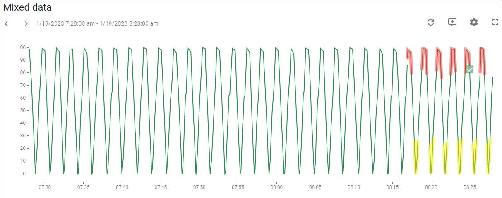
AVEVA Historian Client Web showing a "Mixed data" trend of Level_001.PV over a 1-hour window (7:28 AM to 8:28 AM). The sawtooth pattern shows the level cycling between 0 and ~100. The Refresh button (top-right, circled) updates the trend to the latest data. Green checkmarks on the trend indicate alarm acknowledgment markers — click them to view acknowledgment details (page 7-31)
Step 22. Hover over the trend and use your mouse wheel to zoom in until the trend shows red and yellow highlight colors at the peaks and troughs of the level signal.
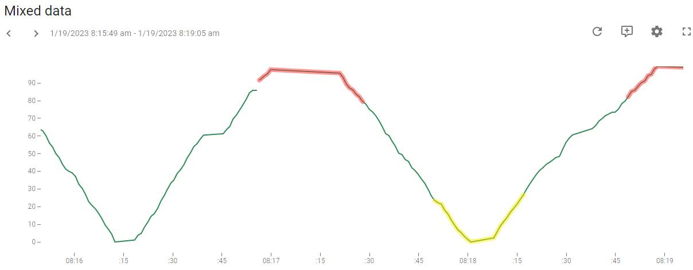
Zoomed-in view of the Level_001.PV trend (8:15:49 AM to 8:19:55 AM) showing alarm severity colors: Red segments indicate the Hi limit alarm (Priority 100 = Severity 1), Yellow segments indicate the Lo limit alarm (Priority 500 = Severity 2), and Green segments indicate normal operation between alarm thresholds (page 7-31)
Alarm Severity and Color Coding:
Priority
Severity
Color
Meaning
100
Severity 1
Red
High-priority alarm (Hi limit exceeded)
500
Severity 2
Yellow
Medium-priority alarm (Lo limit exceeded)
700
Severity 3
—
Lower-priority alarm (State alarm)
Alarm colors on trends are only visible when you zoom in enough to resolve individual data segments. The zoom level must be detailed enough to show the alarm limit colors associated with each severity.
Step 23. Minimize AVEVA Historian Client Web.
24.9 Querying Alarm History with SQL Server Management Studio
Reference: Lab 13 (pages 7-32 to 7-35)
The final section of this lab uses Microsoft SQL Server Management Studio (SSMS) to query the AVEVA Runtime database directly. This provides access to high-speed alarm history data that may not be visible through the Historian Client Web.
24.9.1 Connecting to SQL Server
Step 24. Open Microsoft SQL Server Management Studio (found in the Windows menu under Microsoft SQL Server tools).
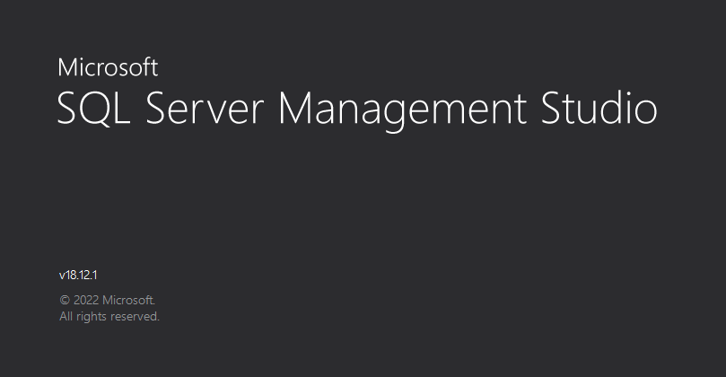
SQL Server Management Studio (SSMS) v18.12.1 splash screen during startup. The Connect to Server dialog will appear after a few moments (page 7-32)
Step 25. Leave the default settings and click Connect.
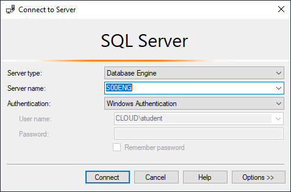
SSMS Connect to Server dialog with default settings: Server type = Database Engine, Server name = S00ENG, Authentication = Windows Authentication (user: CLOUD\student). Click Connect to proceed (page 7-32)
24.9.2 Opening the SQL Query Script
Step 26. On the File menu, click Open → File.
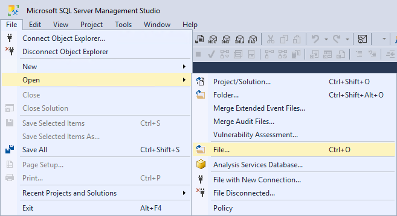
SSMS File menu expanded showing the Open → File... option (Ctrl+O). This is the standard way to open SQL query scripts in SSMS (page 7-33)
Step 27. Navigate to C:\Training, and select Lab 13 - Querying Alarm History.SQL.
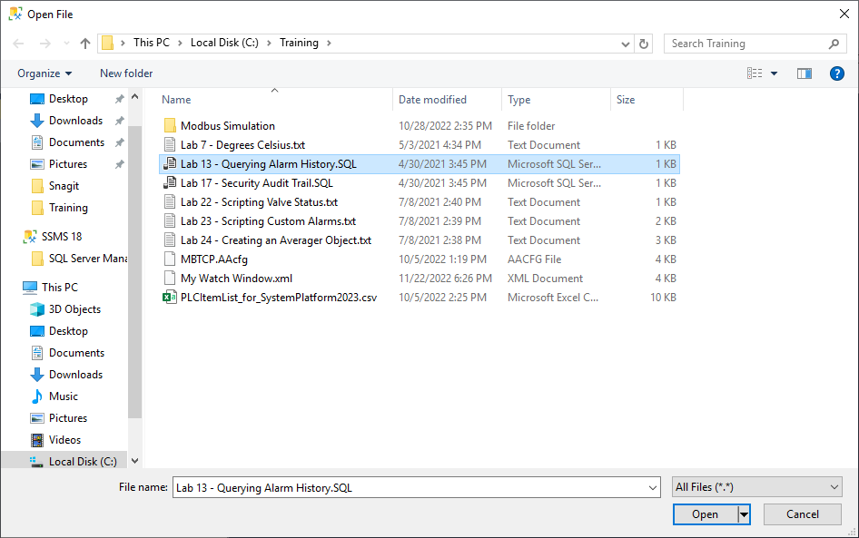
Windows Open File dialog navigating to C:\Training. The file "Lab 13 - Querying Alarm History.SQL" is highlighted and selected. This pre-written script contains two SQL queries for retrieving alarm and event history data (page 7-33)
Step 28. Click Open.
24.9.3 Running the SQL Queries
The SQL script contains two queries. The first retrieves all events from the last hour; the second filters specifically for alarm-type events.
Step 29. Highlight the first query in the query editor.
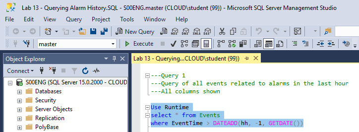
SSMS query editor showing Query 1 highlighted. The query selects all columns from the Events table for events occurring in the last hour. The Object Explorer on the left shows the connected SOENG SQL Server instance (page 7-34)
-- Query 1: All events in the last hour
USE Runtime
SELECT * FROM Events
WHERE EventTime > DATEADD(hh, -1, GETDATE())
Step 30. On the toolbar, click Execute (or press F5).
The results appear in the bottom pane showing the complete alarm and event history for the last hour. Scroll right and down to view all columns and rows.
Step 31. Scroll to the right and down to view all the data.
Step 32. Now highlight the second query — this one provides a more focused, formatted view of alarm-specific data.
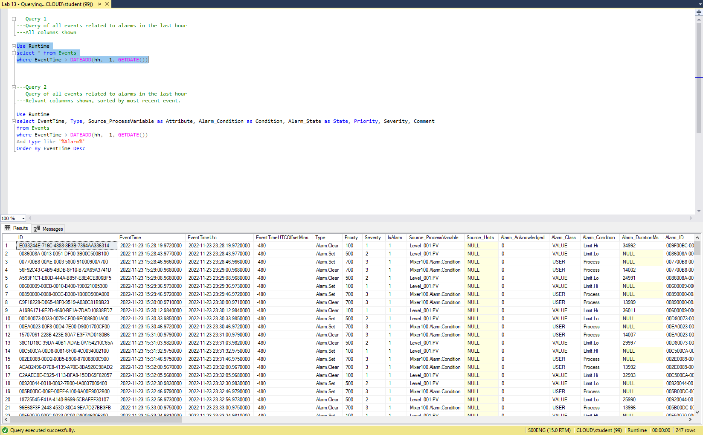
SSMS showing Query 2 (alarm-specific) and its results. The query selects key alarm columns with readable aliases, filters to only alarm-type events, and sorts by newest first. The results table shows alarm records with columns for EventTime, Type (Alarm.Set/Alarm.Clear), Attribute, Condition, State, Priority, and Severity (page 7-34)
-- Query 2: Alarm-specific events in the last hour
USE Runtime
SELECT EventTime, Type,
Source_ProcessVariable AS Attribute,
Alarm_Condition AS Condition,
Alarm_State AS State,
Priority, Severity, Comment
FROM Events
WHERE EventTime > DATEADD(hh, -1, GETDATE())
AND Type LIKE '%Alarm%'
ORDER BY EventTime DESC
Step 33. Click Execute to run the second query.
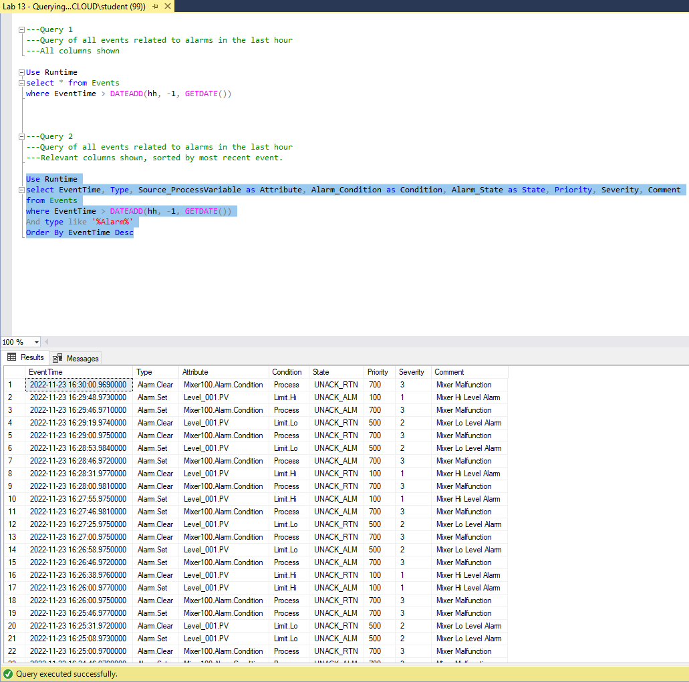
SSMS results after executing Query 2. The results show formatted alarm event records with columns: EventTime, Type (Alarm.Set = triggered, Alarm.Clear = resolved), Attribute (Level_001.PV, Mixer100.Alarm.Condition), Condition (Limit.Hi, Limit.Lo, Process), State (UNACK_ALM, UNACK_RTN), Priority, Severity, and Comment ("Mixer Hi Level Alarm", "Mixer Lo Level Alarm", "Mixer Malfunction"). The status bar confirms "Query executed successfully" (page 7-35)
Understanding the Alarm Event Types:
Type
Meaning
Alarm.Set
Alarm condition was triggered — the process value crossed the alarm threshold
Alarm.Clear
Alarm condition was resolved — the process value returned to normal
The Alarm_State column shows acknowledgment status:
UNACK_ALM — Unacknowledged active alarm (operator hasn't confirmed yet)
UNACK_RTN — Unacknowledged return-to-normal (alarm cleared but operator hasn't acknowledged)
Why Query the Database Directly? While Historian Client Web provides a user-friendly graphical view, querying the SQL Server directly gives you access to the complete alarm event record — including all columns, timestamps, and metadata. This is especially useful for:
Auditing alarm history for compliance purposes
Building custom reports or dashboards
Troubleshooting alarm floods or nuisance alarms
Analyzing alarm acknowledgment patterns and response times
Step 34. Close Microsoft SQL Server Management Studio. End of Lab.
24.10 Lab Summary
This lab covered the complete alarm workflow in AVEVA Application Server:
Phase
What You Did
Key Takeaway
Configuration
Set up Hi/Lo limit alarms on Level and a State alarm on Alarm.Condition
Limit alarms use numeric thresholds; State alarms use Boolean states
Deployment
Deployed Mixer100, Level_001, and L1 changes to runtime
IDE changes require deployment to take effect
Runtime Monitoring
Used Object Viewer to observe InAlarm states and AckMsg attributes
InAlarm = true means the alarm is currently active
Acknowledgment
Acknowledged the Hi alarm via AckMsg string attribute
Message must change to re-acknowledge; acknowledgment reduces severity counts
Historian Web
Viewed alarm colors on trend (Red=Hi, Yellow=Lo)
Only historized attributes show alarm history in the Client Web
SQL Queries
Queried Runtime database for complete alarm event records
Direct SQL access provides full event details for auditing and analysis
Quiz
Q1: What is the difference between a Limit alarm and a State alarm?
A Limit alarm triggers when a numeric attribute crosses a defined threshold (e.g., level > 80.0). A State alarm triggers when a Boolean attribute enters a specific state (True or False). Limit alarms are configured on numeric attributes (Float, Integer) via the Limit Alarms panel; State alarms are configured on Boolean attributes via the State Alarm panel.
Q2: What does the InAlarm attribute indicate?
The InAlarm attribute indicates whether an alarm condition is currently active. When InAlarm = true, the process value is in the alarm state (e.g., above the Hi limit or below the Lo limit). When InAlarm = false, the alarm condition is not active.
Q3: Why does Mixer.Alarm.Condition not appear in the Historian Client Web trend?
Alarm history is only visible in Historian Client Web for attributes that are historized. The Mixer.Alarm.Condition attribute was configured with I/O and State alarm features, but History was not enabled. Therefore, no historical data is stored for this attribute, and it cannot be added to a trend. Only Level_001.PV (which was historized in Lab 12) shows alarm colors on the trend.
Q4: What do the red and yellow colors on the Historian Client Web trend represent?
Red indicates a Severity 1 alarm (Hi limit exceeded, Priority 100). Yellow indicates a Severity 2 alarm (Lo limit exceeded, Priority 500). Green indicates normal operation between alarm thresholds. These colors are only visible when you zoom in enough to resolve individual data segments on the trend.
Q5: What is the purpose of entering -1 in the AlarmCntsBySeverity array index dialog?
Entering -1 retrieves the entire array dimension — all 13 elements of the AlarmCntsBySeverity array — rather than a single index element. This gives you a complete view of alarm counts across all severity levels and acknowledgment states (active, UNACK_ALM, UNACK_RTN) for the selected area or object.
Q6: What SQL query would you use to find only high-priority (Priority < 200) alarm events from the last 2 hours?
USE Runtime
SELECT EventTime, Type, Source_ProcessVariable AS Attribute,
Alarm_Condition AS Condition, Alarm_State AS State,
Priority, Severity, Comment
FROM Events
WHERE EventTime > DATEADD(hh, -2, GETDATE())
AND Type LIKE '%Alarm%'
AND Priority < 200
ORDER BY EventTime DESC
This modifies the lab's Query 2 by extending the time window to 2 hours and adding a Priority < 200 filter to isolate only high-priority alarms (Severity 1 range).
Source: AVEVA Application Server 2023 Training Manual, Module 7 Lab 13